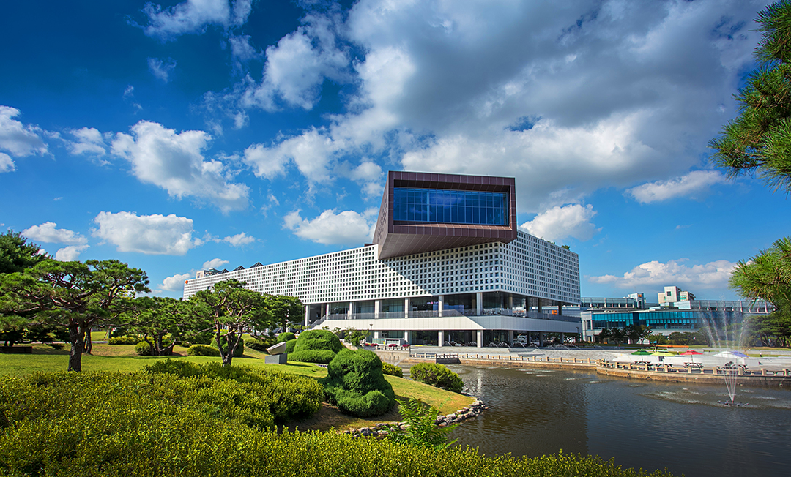

Location
Venue & Travel
The conference will be held in Daejeon, Republic of Korea.
Venue
Chung Kunmo Conference Hall & John Hannah Hall
5th floor, Academic Cultural Complex (E9, Cultural
Building)
KAIST, 291 Daehak-ro, Yuseong-gu, Daejeon, Republic of Korea

Transportation →
Information on traveling from Incheon International Airport (ICN) to the conference venue at KAIST.
Accommodation →
A list of hotels near the conference venue, including location, distance, and booking information.
Local Information →
Weather guidance, local attractions, tourism resources, and useful contacts for your stay in Daejeon and Korea.
WiFi Connection Instructions
If your home institution participates in eduroam, please obtain or confirm your eduroam credentials with your home institution before traveling. You can use those credentials to connect to the eduroam network at KAIST.
If you do not have an eduroam account, please ask a conference staff member for assistance. A temporary WiFi ID and password will be provided for conference participants.